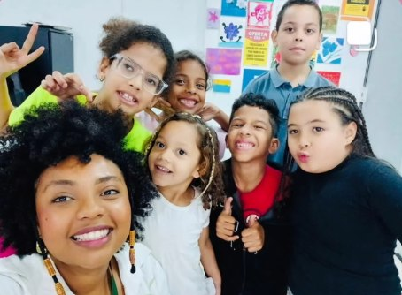
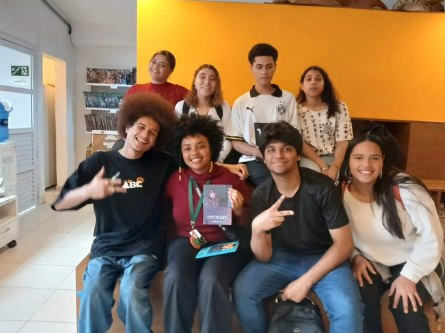
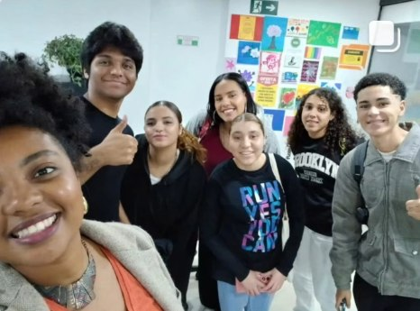
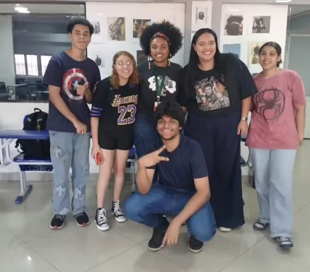

Avaliação e intervenção em casos de dislexia, disortografia e outras dificuldades específicas de aprendizagem.
Psicopedagogia clínica & institucional
Todo jeito de aprender merece um caminho próprio.
Acompanho crianças, adolescentes e famílias no processo de aprendizagem — com escuta, avaliação cuidadosa e estratégias construídas sob medida para cada história.
Sobre
Cada criança escreve o aprendizado à sua maneira.
Sou Daniely, psicopedagoga clínica e institucional à frente da Nexus Psicopedagogia. Trabalho com crianças e adolescentes que enfrentam dificuldades de aprendizagem, dando suporte também às famílias e às escolas ao longo do processo.
Acredito que dificuldade de aprendizagem não é falta de capacidade — é, na maioria das vezes, um caminho que ainda não foi encontrado. Meu papel é ajudar a encontrar esse caminho, com escuta atenta e método consistente.
- Psicopedagogia Clínica e Institucional
- Atendimento individual e orientação familiar
- Parceria com escolas e outros profissionais
Atuação
Onde posso ajudar
Suporte psicopedagógico para crianças com TDAH e dificuldades de atenção dentro e fora da sala de aula.
Intervenções para discalculia e dificuldades específicas com números, cálculo e raciocínio matemático.
Devolutivas claras, orientação prática para casa e articulação direta com a equipe pedagógica.
Galeria
O dia a dia do acompanhamento




Como funciona
O processo de atendimento
-
01
Conversa inicial
Entendemos juntas a queixa, a história e as expectativas da família — por chamada ou presencialmente.
-
02
Avaliação psicopedagógica
Sessões de investigação com instrumentos específicos para mapear como essa criança aprende.
-
03
Devolutiva
Retorno claro para a família (e para a escola, quando necessário) com o diagnóstico e o plano de trabalho.
-
04
Acompanhamento contínuo
Sessões regulares de intervenção, com revisão periódica do plano conforme a evolução.
Famílias atendidas
O que dizem sobre o acompanhamento
Acompanhe o dia a dia no Instagram
Bastidores do atendimento, conteúdo para famílias e novidades — tudo por lá, em primeira mão.
Dúvidas frequentes
Perguntas que recebo com frequência
Psicopedagoga é a mesma coisa que psicóloga?
Não. A psicopedagoga atua especificamente sobre o processo de aprendizagem — como a criança aprende, lê, escreve e raciocina — enquanto a psicologia trata de questões emocionais mais amplas. Em alguns casos, os dois acompanhamentos se complementam.
Com que idade posso trazer meu filho?
Atendo desde os primeiros anos da alfabetização até o final do ensino médio, adaptando a abordagem para cada fase.
O atendimento é presencial ou online?
Ambos os formatos são possíveis, dependendo da necessidade e da idade da criança. Conversamos sobre isso na primeira sessão.
Quanto tempo dura o acompanhamento?
Varia bastante conforme cada caso. Após a avaliação inicial, te dou um panorama realista de prazo e frequência.
Vamos entender juntas o jeito do seu filho aprender?
O primeiro passo é uma conversa, sem compromisso.
Falar no WhatsApp